Cloth Pads Workshop
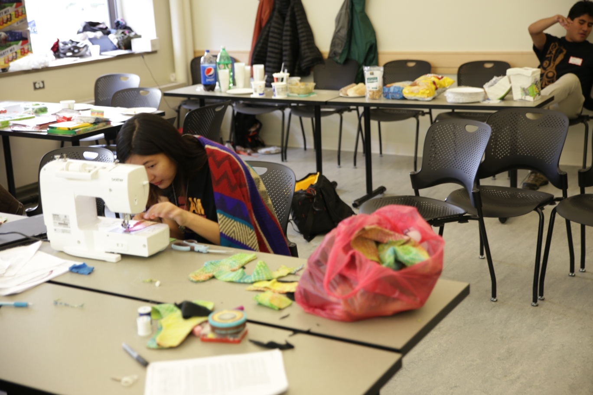
Cloth Pads Workshop
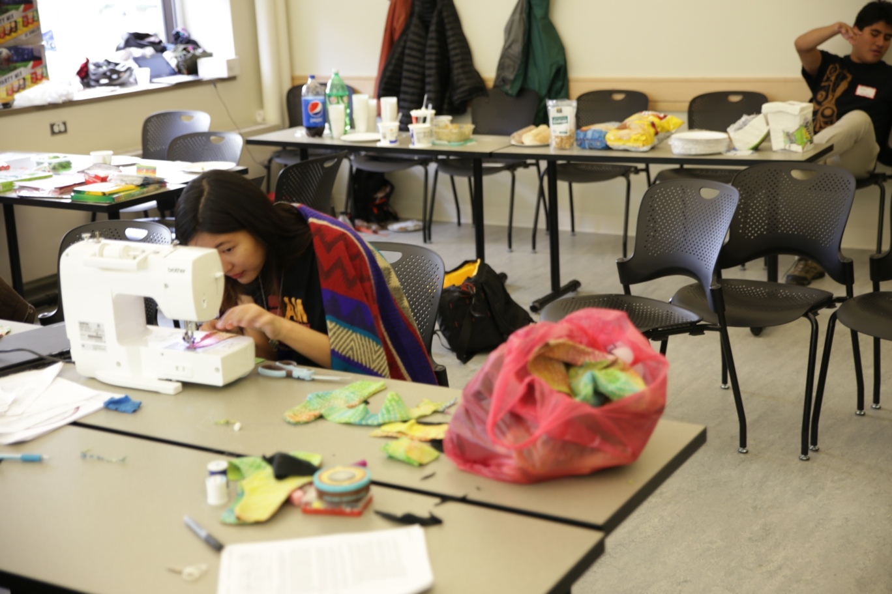
Project Teams
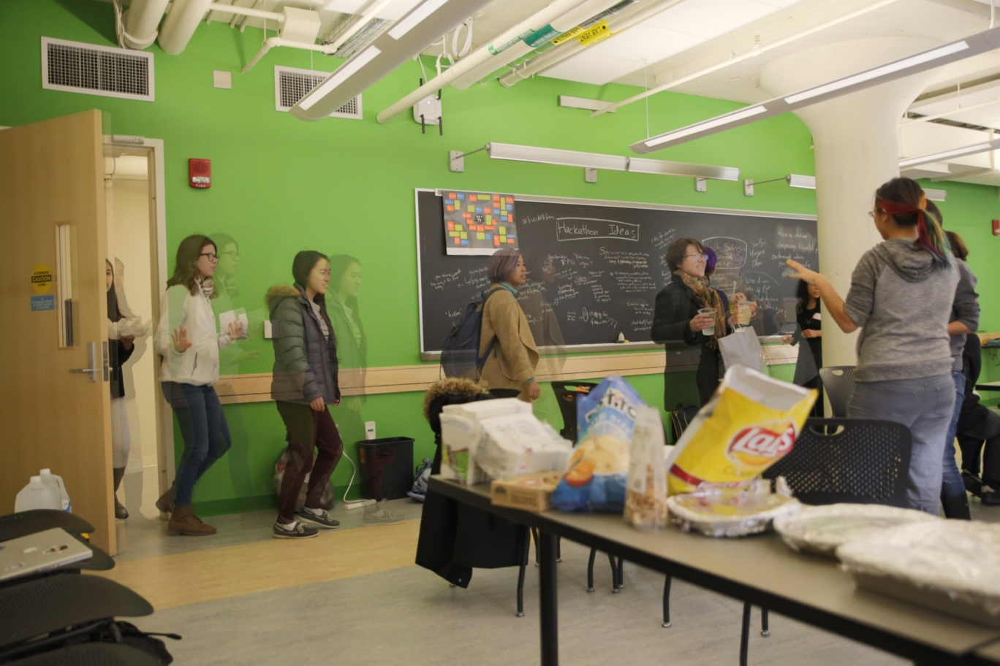 Team:Crazy Hacks
Members:
Nancy Ouyang, Marcela Rodriguez
Description:Map which places provide abortions and which are fake abortion clinics to help patients decipher information. (in the future, make it geolocate / phone app)
Presentation 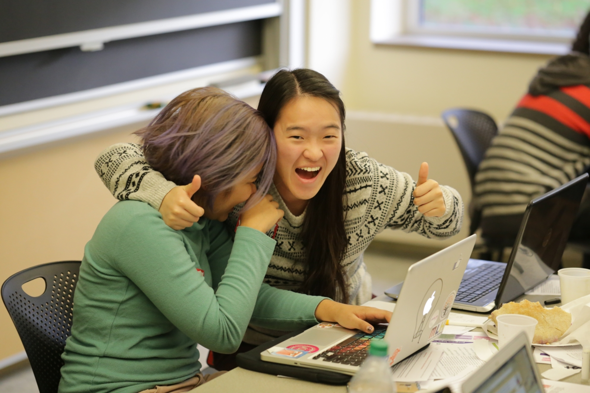 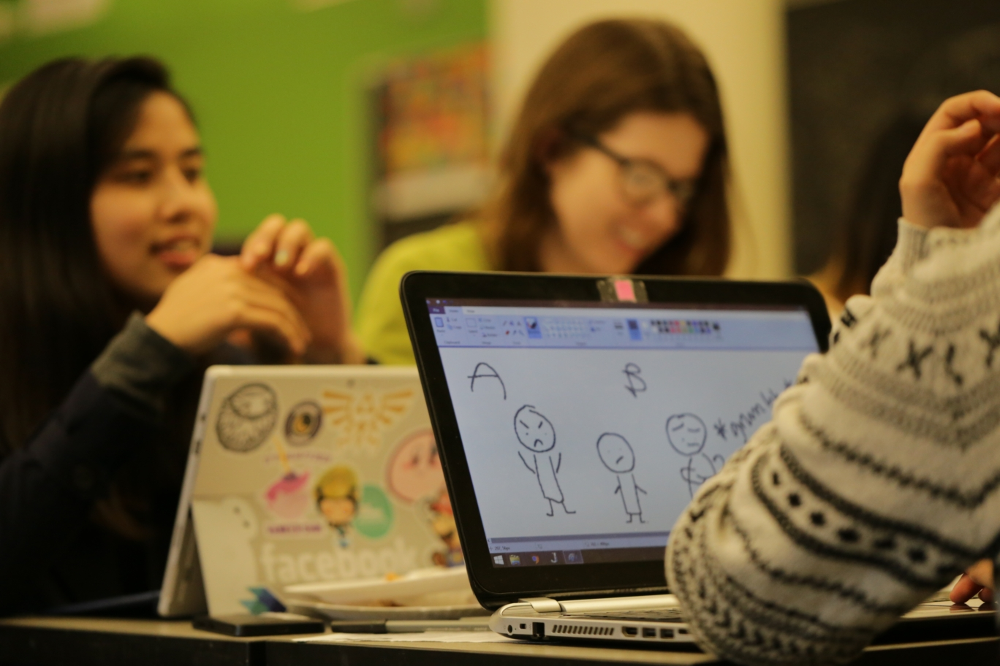 Team:Crystal Gems
Members:Jacqueline Young, Pet Ramanudom, Maggie Jennings, Jesslyn Tannady
Description:Why do some bystanders choose not to act? What are some ways that bystanders can intervene in the face of harassment in a way that is safe for both them and the person they are aiming to help? Let's find out...by playing a (FUN) game.
Presentation 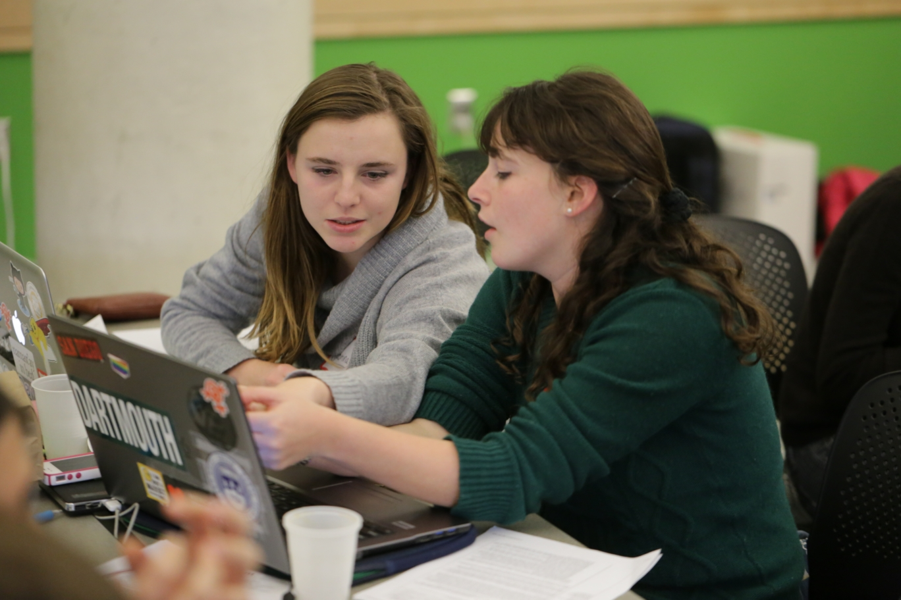 Team:Woovie
Members:Sabrina Bergsten, Laura Bergsten
Description:Woovie is a site built for film-enthusiasts who are tired of movies made for and by a male gaze. Movies with female characters make a killing in the box office, because women like movies just as much as their male counterparts. With this site, users can choose which movies to see (and comment/vote on those for others to go out and watch). Hopefully this community would work to gain larger viewership for movies that empower women (and smaller ones for those that do not).
Screenshots: 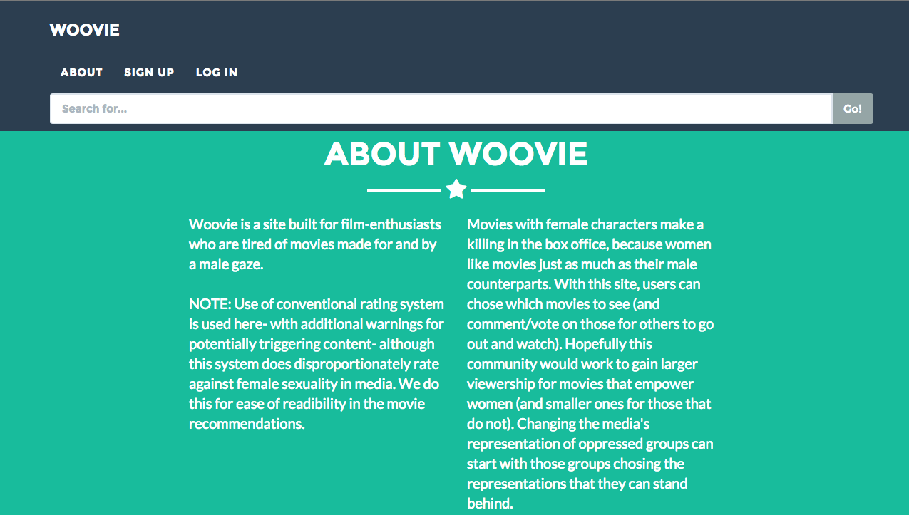 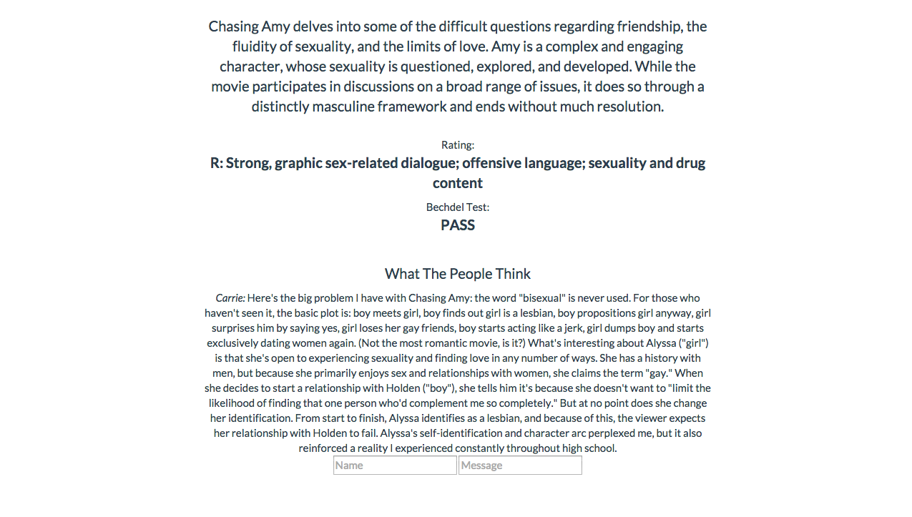 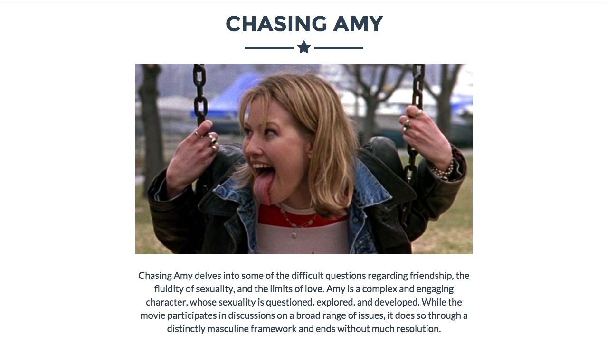 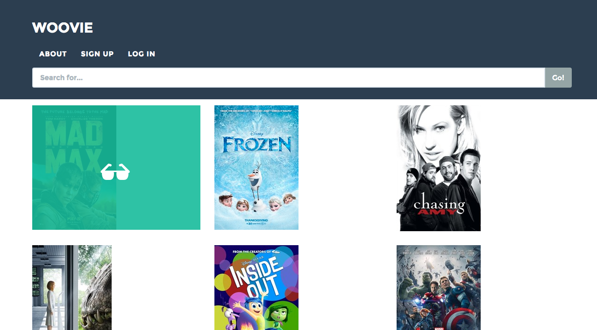 Team:Tweet Sexism
Members:Sonja, Alice, Esther
Description:Initially intended to allow people to anonymously tweet about workplace sexism; currently has some issues related to being able to flame
Website 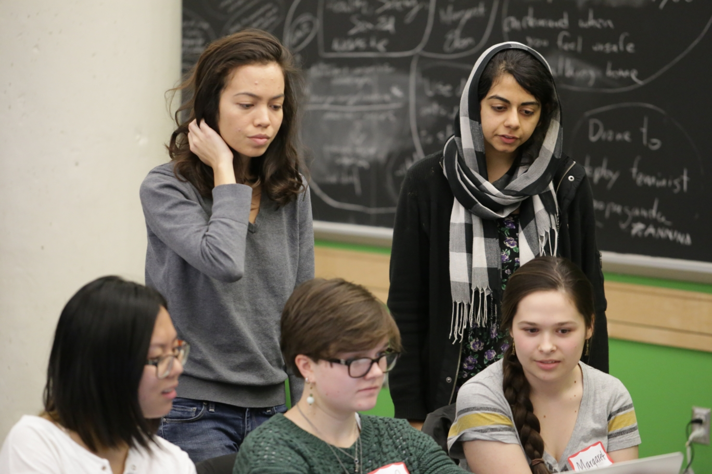 Team:Sext Based Adventure
Members:Eliza, Margaret, Soo Bin, Renee, Asra
Description:An interactive, scenario based sexual education website for different age groups. We'll be presenting the "consent" section designed for middle schoolers.
 Team:
Team:
Everyday Sexism
Members:Alyssa, Harini, Joy, Nadya, Matt
DescriptionScraping all of the data from Everyday Sexism, and analyzing that data.
Presentation 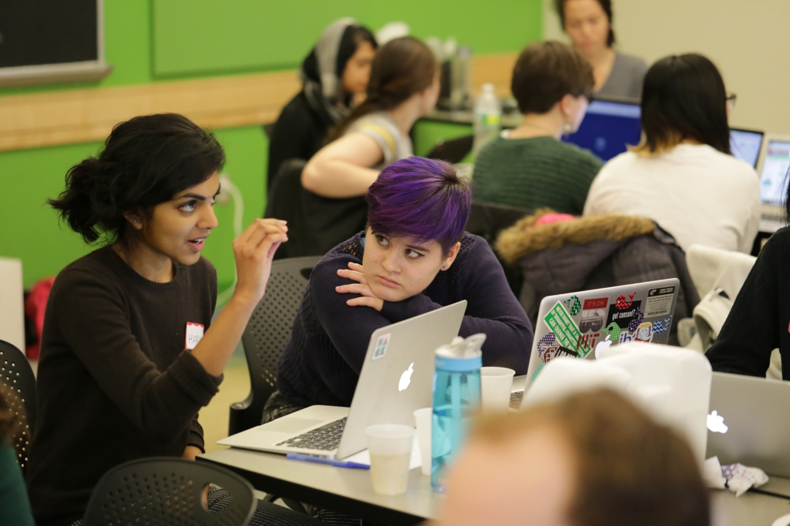 Team:Unnamed
Members:Stephanie, Annina, Guillaume
Description:A gender-swapped deck of cards. It has several levels and gets progressively overtly feminist. The idea is to use a regular set of cards. We wanted to use an everyday object to help us camouflage our feminist intentions.
Website Follow @hack4fem